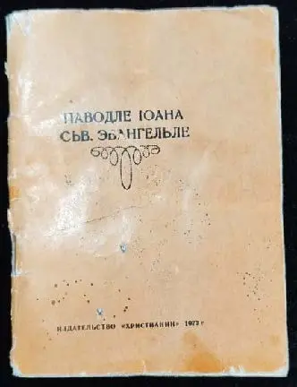
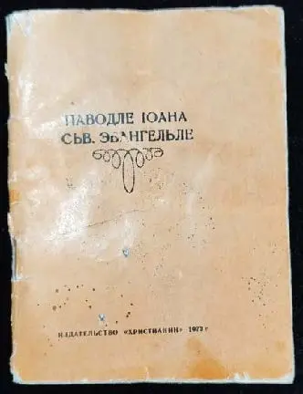

«Паводле Іоана сьв. Эвангельле», Пераклад Лукаша Дзекуць-Малея
Лодзь. 1926 г.
 

Баптысцкі пастар з Берасця, Лукаш Дзекуць-Малей пераклаў напачатку 1920-х гг. Евангеллі на сучасную беларуску мову. Працу па перакладу Новага Запавета ён рабіў разам са сваёй жонкай Серафімай.